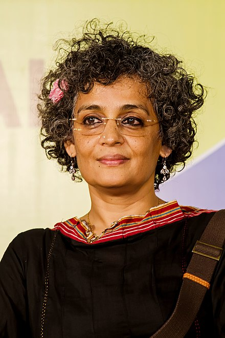

Arundhati Roy was born in Shillong, Meghalaya, India, to Mary Roy, a Malayali Jacobite Syrian Christian women's rights activist
from Kerala and Rajib Roy, a Bengali Hindu tea plantation manager from Calcutta. When she was two, her parents divorced and she
returned to Kerala with her mother and brother.[8] For some time, the family lived with Roy's maternal grandfather in Ooty, Tamil Nadu.
When she was five, the family moved back to Kerala, where her mother started a school.
Roy attended school at Corpus Christi, Kottayam, followed by the Lawrence School, Lovedale, in Nilgiris, Tamil Nadu.
She then studied architecture at the School of Planning and Architecture, Delhi, where she met architect Gerard da Cunha.
They married in 1978 and lived together in Delhi, and then Goa, before they separated and divorced in 1982.

Personal Life
Roy returned to Delhi, where she obtained a position with the National Institute of Urban Affairs.
In 1984, she met independent filmmaker Pradip Krishen, who offered her a role as a goatherd in his award-winning movie Massey Sahib.
They later married the same year. They collaborated on a television series about India's independence movement and two films,
Annie and Electric Moon. Disenchanted with the film world, Roy experimented with various fields, including running aerobics classes.
Roy and Krishen currently live separately but are still married.She became financially secure with the success of her novel
The God of Small Things, published in 1997.Roy is a cousin of prominent media personality Prannoy Roy, the head of the Indian
television media group NDTV. She lives in Delhi.
About
Roy was awarded the 1997 Booker Prize for her novel The God of Small Things. The award carried a prize of approximately US$30,000 and a citation that noted,
"The book keeps all the promises that it makes".Roy donated the prize money she received, as well as royalties from her book, to human rights causes.
Prior to the Booker, Roy won the National Film Award for Best Screenplay in 1989, for the screenplay of In Which Annie Gives It Those Ones, in which she
captured the anguish among the students prevailing in professional institutions. In 2015, she returned the national award in protest against religious
intolerance and the growing violence by rightwing groups in India.
In 2002, she won the Lannan Foundation's Cultural Freedom Award for her work "about civil societies that are adversely affected by the world's
most powerful governments and corporations", in order "to celebrate her life and her ongoing work in the struggle for freedom, justice and cultural
diversity". In 2003, she was awarded "special recognition" as a Woman of Peace at the Global Exchange Human Rights Awards in San Francisco with
Bianca Jagger, Barbara Lee, and Kathy Kelly. Roy was awarded the Sydney Peace Prize in May 2004 for her work in social campaigns and her advocacy of non-violence. That same year she was awarded the Orwell Award, along with Seymour Hersh, by the National Council of Teachers of English.
In January 2006, she was awarded the Sahitya Akademi Award, a national award from India's Academy of Letters, for her collection of essays on
contemporary issues, The Algebra of Infinite Justice, but she declined to accept it "in protest against the Indian Government toeing the US line
by 'violently and ruthlessly pursuing policies of brutalisation of industrial workers, increasing militarisation and economic neo-liberalisation'".
In November 2011, she was awarded the Norman Mailer Prize for Distinguished Writing.
Roy was featured in the 2014 list of Time 100, the 100 most influential people in the world.